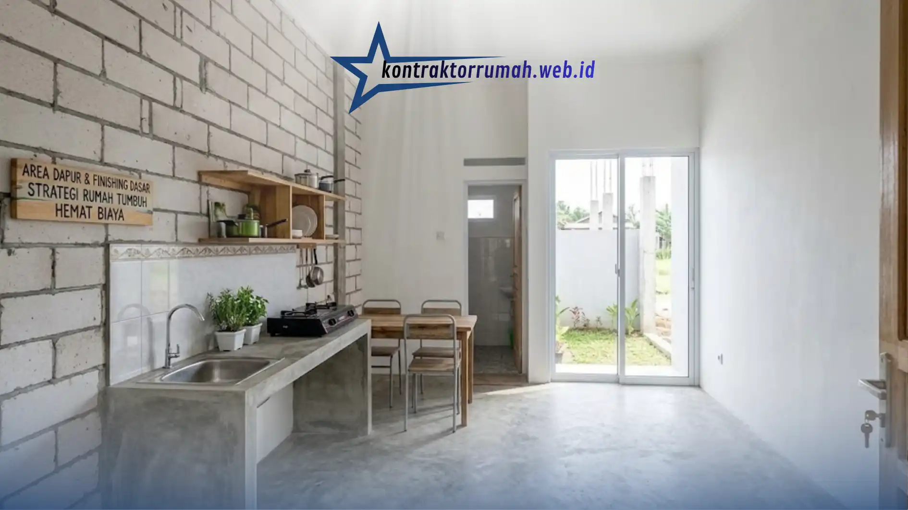

Punya lahan sendiri tapi dana di tabungan masih terbatas? Kamu tidak sendirian. Banyak pemula yang merasa pesimis saat melihat saldo rekeningnya dan menunda niat membangun rumah sampai bertahun-tahun lamanya.
Padahal, menunda pembangunan sering kali membuat harga material keburu naik berlipat ganda. Di sisi lain, jika asal membangun tanpa perhitungan yang jelas, proyek justru berisiko mangkrak di tengah jalan dan menyisakan bangunan setengah jadi yang tidak bisa ditinggali — kondisi yang jauh lebih merugikan daripada menunggu sedikit lebih lama.
Belum lagi risiko lain: banyak pemula yang kehabisan dana di tengah proyek karena tidak punya rencana prioritas sejak awal. Akibatnya, rumah berdiri tapi tidak lengkap, misalnya dinding sudah jadi tapi belum ada plester, atau atap terpasang tapi kamar mandi belum berfungsi.
Poin Penting
- Terapkan strategi rumah tumbuh: bangun struktur & ruang esensial dulu, kembangkan nanti tanpa bongkar ulang.
- Alokasi umum: struktur & pondasi 30-35%, dinding & atap 25-30%, listrik & air 10-15%, finishing dasar 15-20%, cadangan minimal 10%.
- Material fungsional seperti hebel dan baja ringan mempercepat pengerjaan sekaligus menghemat bujet.
- Sistem borongan mengunci biaya tenaga kerja sejak awal, meminimalkan risiko pembengkakan biaya.
- Selalu sisihkan dana cadangan 10% untuk kondisi tak terduga di lapangan.
Kunci Utama: Perencanaan Prioritas, Bukan Membangun Sekaligus
Mengelola biaya bangun rumah 100 juta bukanlah angan-angan kosong jika kamu memilih strategi "rumah tumbuh" atau konsep minimalis. Kamu hanya perlu membangun struktur utama dan ruangan esensial terlebih dahulu (seperti satu kamar, kamar mandi, dan area dapur), lalu melanjutkannya nanti saat dana kembali terkumpul.
Prinsipnya sederhana: bangun yang benar-benar dibutuhkan dulu, sisakan ruang untuk pengembangan di masa depan tanpa perlu membongkar struktur yang sudah ada. Misalnya, kamu bisa merancang pondasi yang sudah siap menopang lantai dua sejak awal, meskipun lantai dua-nya baru dibangun beberapa tahun kemudian.
Rincian Alokasi Bujet 100 Juta
Sebagai gambaran kasar, berikut pembagian bujet yang umum dipakai untuk strategi rumah tumbuh (angka bisa berbeda tergantung lokasi dan harga material terkini):
| Komponen | Estimasi Alokasi |
|---|---|
| Struktur & pondasi | 30-35% dari total bujet |
| Dinding & atap | 25-30% dari total bujet |
| Instalasi listrik & air | 10-15% dari total bujet |
| Finishing dasar (lantai, pintu, jendela) | 15-20% dari total bujet |
| Dana cadangan tak terduga | minimal 10% dari total bujet |
Fokus pada Material Fungsional
Gunakan bata ringan (hebel) untuk dinding yang lebih cepat pemasangannya, serta atap baja ringan yang awet namun ramah di kantong. Kombinasi material ini membantu menekan biaya tenaga kerja karena waktu pengerjaan yang lebih singkat dibanding material konvensional.
Gaya Industrial Terbuka
Biarkan dinding tanpa plester di beberapa area atau aplikasikan lantai semen ekspos. Selain menghemat semen dan keramik, rumah akan terasa lebih estetis dan luas dengan sentuhan gaya industrial yang sedang digemari.

Dapur bergaya semen ekspos menghemat biaya finishing tanpa mengorbankan tampilan estetis rumah.
Sewa Tukang Borongan
Sistem borongan lebih cocok untuk bujet ketat karena total biaya tenaga kerjanya sudah dikunci sejak awal, sehingga risiko pembengkakan biaya tenaga kerja bisa diminimalkan.
Beli Material di Awal Musim
Harga material bangunan cenderung naik menjelang musim hujan atau akhir tahun. Membeli lebih awal bisa menghemat cukup signifikan, terutama untuk material dalam jumlah besar seperti semen, besi, dan pasir.
Siapkan Dana Cadangan 10%
Meski sudah dihitung detail, selalu sisihkan sekitar 10% dari total bujet untuk kebutuhan tak terduga di lapangan, seperti kondisi tanah yang ternyata butuh pengerjaan ekstra.
Catatan dari tim Kontraktor Rumah: Kontraktor Rumah terbiasa menyusun RAB berbasis prioritas sejak konsultasi awal, sehingga klien dengan bujet terbatas tetap bisa punya rumah layak huni tanpa proyek mangkrak di tengah jalan.
FAQ Seputar Biaya Bangun Rumah 100 Juta
Membangun rumah dengan dana 100 juta memang menantang, tapi bukan hal yang mustahil selama strategi dan prioritasnya tepat. Konsep rumah tumbuh memungkinkanmu punya tempat tinggal layak huni lebih cepat, sambil tetap membuka ruang pengembangan di masa depan.